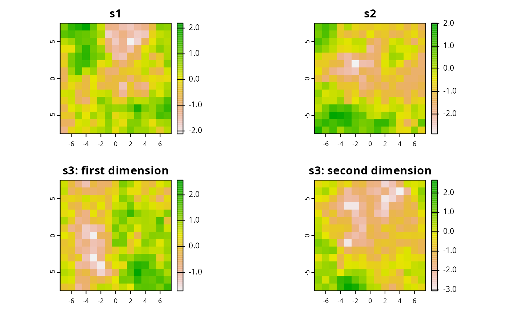

This function simulates attribute space data for RAP.
sim.space(x, ...) # S3 method for RasterLayer sim.space(x, d = 2, model = RandomFields::RMgauss(), ...) # S3 method for SpatialPolygons sim.space(x, res, d = 2, model = RandomFields::RMgauss(), ...)
| x |
|
|---|---|
| ... | parameters passed to |
| d |
|
| model |
|
| res |
|
RasterStack with layers for each dimension of the space.
Distributions are simulated by passing model to
RFsimulate.
# simulate plannign units sim_pus <- sim.pus(225L) # simulate 1d space using RasterLayer s1 <- sim.space(blank.raster(sim_pus, 1), d = 1) # simulate 1d space using SpatialPolygons s2 <- sim.space(sim_pus, res = 1, d = 1) # simulate 2d space using SpatialPolygons s3 <- sim.space(sim_pus, res = 1, d = 2)#> ..# plot simulated spaces par(mfrow = c(2,2)) plot(s1, main = "s1") plot(s2, main = "s2") plot(s3[[1]], main = "s3: first dimension") plot(s3[[2]], main = "s3: second dimension")